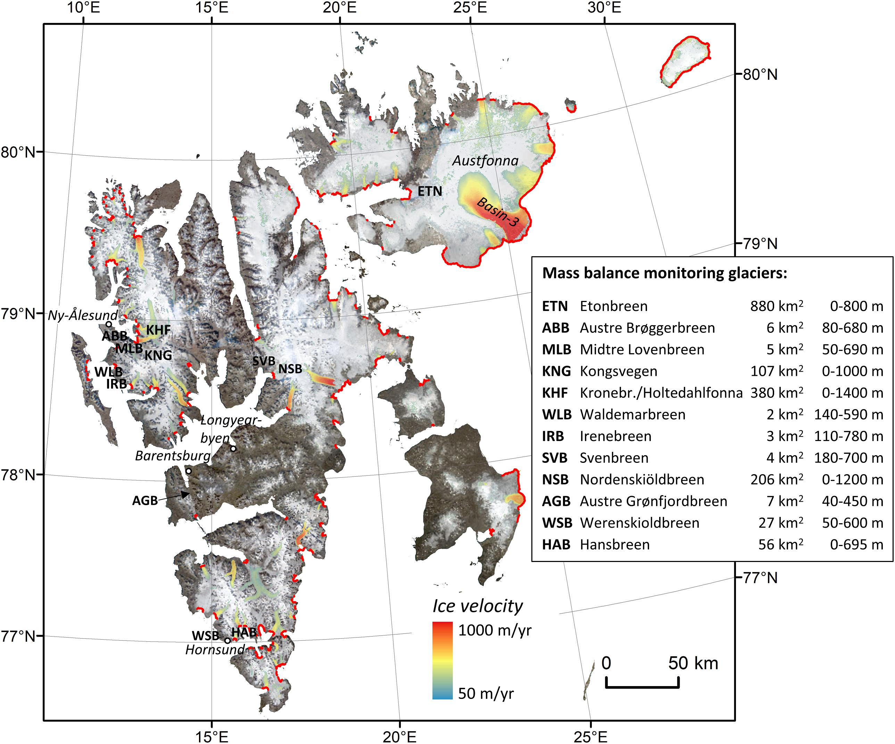

ICESat-2 data products
Contents
ICESat-2 data products¶
This tutorial is meant to show some examples of the standard land-ice data products put out by the ICESat-2 project. It is not a comprehensive look at all the products, nor does it document all the features available in the product is shows. Rather, it presents some tools for looking at the data, and shows how the information flows between land-ice products.
Learning goals¶
Demonstrate basic HDF-5 product structures of ICESat-2 standard data products
Demonstrate the flow of information from the lowest-level products to the highest-level products (or vice versa)
Data search using geographic regions and file names using icePyx
File-level data access from NSIDC
Photon data access using SlideRule
# import packages:
import numpy as np # Numeric Python
import matplotlib.pyplot as plt # Plotting routines
import h5py # general HDF5 reading/writing library
import rioxarray as rx # Package to read raster data from hdf5 files
from pyproj import Transformer, CRS # libraries to allow coordinate transforms
import glob # Package to locate files on disk
import os # File-level utilities
import re # regular expressions for string interpretation
import icepyx as ipx # Package to interact with ICESat-2 online resources
from sliderule import icesat2 # Package for online ICESat-2 processing
#Please note: This tutorial is best run in interactive mode,
# but is archived with the interactive section disabled.
# To enable interactive mode, comment the next line, and uncomment the second line:
%matplotlib inline
#%matplotlib widget
%config InlineBackend.figure_format = 'retina'
0. Get access to earthdata using a .netrc file. You’ll need to do this to run the notebook!¶
We will need to generate a (hidden) .netrc file in our local directory. The 2021 Cloud Hackathon came up with a function that does this painlessly. You’ll only have to run this once on each computer you use for this tutorial. If you’re running interactively, you’ll have to uncomment two lines in the next cell and run that cell.
#DEFAULT: to generate the rendered tutorial for the book. Comment these two lines if you are running interactively
HOST = 'https://urs.earthdata.nasa.gov'
ipx.core.Earthdata.Earthdata('uwhackweek','hackweekadmin@gmail.com', HOST).login()
# If you are running interactively, uncomment these two lines, and run this cell!
#from setup_earthdata_netrc import setup_earthdata_netrc
#setup_earthdata_netrc()
1. Location¶
We will be looking at Svalbard in the Norwegian Arctic, focusing on the massive surge from the Austfonna ice cap. This started in 2010, and the ice cap is still adjusting to the rapid loss of ice, so we expect to see large thinning rates in the area affected by the surge. We will use the ICESat-2 ATL15 product for a look at the mass-loss pattern over the last three years.

Photo credit: Schuler et. al, Front. Earth Sci., 27 May 2020 | https://doi.org/10.3389/feart.2020.00156
2. ATL15 data.¶
ATL15 provides a high-level map of how ice-surface heights have changed. It supplies grids of surface-height differences relative to a January-2020 reference surface, at quarter-year, 1-km resolution. It comes in subsets for different polar glaciated regions:
The Antarctic and Greenland full-resolution granules are large, but the smaller regions () are compact files that are quick to download.
We’ll download these files directly from NSIDC using the unix ‘wget’ command. You’ll need to have your login credentials set up for this to work. Please check near the top of this tutorial (section zero) for help with this.
Once our credentials are set up, we can use wget to download the ATL15 Svalbard granule:
# Download (-nc = "no clobber" if it already exists
ds_url='https://n5eil01u.ecs.nsidc.org/ATLAS/ATL15.001/2019.03.29/ATL15_SV_0311_01km_001_01.nc'
! wget -nc {ds_url} -O /tmp/ATL15_SV_0311_01km_001_01.nc
A note on data access:¶
If the previous slide did not download data, you may need to revisit the commented cell just after section zero (0. Get access to earthdata using a .netrc file. You’ll need to do this to run the notebook!)
The data we want to look at are in the delta_h group, and we can see the structure of the product by opening it with rioxarray:
ds=rx.open_rasterio('/tmp/ATL15_SV_0311_01km_001_01.nc', group='delta_h', masked=True)
ds
The datasets here represent surface-height differences relative to 2020.0. For a quick view of what is going on, we can make a map of the mean height change rate from the start of the mission to the present:
# note that time is in days after Jan 1 2018
dhdt = (ds['delta_h'][-1,:,:]-ds['delta_h'][0,:,:])/(ds['time'][-1]-ds['time'][0])*365.25
extent=np.array([np.min(ds['x'])-500, np.max(ds['x'])+500, np.min(ds['y'])-500, np.max(ds['y'])+500])
plt.figure();
hax=plt.gca()
h_im=hax.imshow(dhdt, cmap='Spectral', extent=extent)
hax.set_aspect(1)
hax.set_ylim([-0.8e6, -0.2e6])
hax.set_xlabel('polar-stereographic x')
hax.set_ylabel('polar-stereographic y')
plt.colorbar(h_im, label='height-change rate, m/yr');
If you are looking at the map in interactive mode (%matplotlib widget in the first cell) you can use the box-zoom button to zoom in on the edge of the surging glacier, or you can run the next cell to zoom to pre-selected region:
YR= np.array([-4.2e5, -3.85e5])
XR= np.array([1.015e6, 1.060e6])
hax.plot(XR[[0, 1, 1, 0, 0]], YR[[0, 0, 1, 1, 0]],'k')
plt.figure();
ax1=plt.gca()
h_im=ax1.imshow(dhdt, cmap='Spectral', extent=extent)
ax1.set_aspect(1)
ax1.set_xlim(XR)
ax1.set_ylim(YR)
plt.colorbar(h_im, label='dh/dt, m/yr');
If we want to see the height change for a point, we can find the x and y coordinates that are closest to that point, and plot the delta_h variable for those coordinates. Let’s do that for the point a the center of the current zoomed view, and for another point 12 km to the left:
# get the limits of the current axes, mark the center
XR=np.array(ax1.get_xlim()) #<----------In interactive mode, try zooming in on a different location
YR=np.array(ax1.get_ylim())
xc=XR.mean()
yc=YR.mean()
# find the point closest to the axes center:
col=np.argmin(np.abs(np.array(ds.x)-xc))
row=np.argmin(np.abs(np.array(ds.y)-yc))
ax1.plot(ds.x[col], ds.y[row],'k*')
plt.figure()
ax2=plt.gca()
ax2.plot(ds.time/365.25+2018, ds.delta_h[:, row, col],'k', marker='*')
# find another point 12 km to the left of the center:
col=np.argmin(np.abs(np.array(ds.x)-(xc-12000)))
row=np.argmin(np.abs(np.array(ds.y)-yc))
ax1.plot(ds.x[col], ds.y[row],'g*')
ax2.plot(ds.time/365.25+2018, ds.delta_h[:, row, col],'g', marker='*')
ax2.set_xlabel('time'); ax2.set_ylabel('height WRT 2020.0, m');
3. ATL11 along-track height data¶
We might be interested to see where these height changes come from. ATL15 is derived from the ATL11 (along-track height change) product, which maps height changes for individual ICESat-2 reference tracks. We don’t necessarily know what track has contributed to the height change at any given point, so we need to bring in some more data-discovery tools to get there.
3.1 Finding ATL11 data using IcePyx and CMR¶
We can use a CMR (Common Metadata Repository) query through icepyx to find what ATL11 granules have contributed to the height changes we see above. CMR queries are conducted in latitude and longitude, rather than projected coordinates, so we’ll need to find the latitude and longitude for the zoomed-in axes using pyproj:
# Prepare coordinate transformations between lat/lon and the ATL15 coordinate system
crs=CRS.from_epsg(3413)
to_xy_crs=Transformer.from_crs(crs.geodetic_crs, crs)
to_geo_crs=Transformer.from_crs(crs, crs.geodetic_crs)
corners_lat, corners_lon=to_geo_crs.transform(np.array(XR)[[0, 1, 1, 0, 0]], np.array(YR)[[0, 0, 1, 1, 0]])
latlims=[np.min(corners_lat), np.max(corners_lat)]
lonlims=[np.min(corners_lon), np.max(corners_lon)]
We’ll use these limits for a CMR query:
region_a = ipx.Query('ATL11', [lonlims[0], latlims[0], lonlims[1], latlims[1]], ['2018-01-01','2022-06-01'], \
start_time='00:00:00', end_time='23:59:59')
region_a.avail_granules()
for count, granule in enumerate(region_a.granules.avail[0:10]):
print(f' {count} {granule["producer_granule_id"]}')
There are a total of 55 granules that intersect our region. This is too many files to download during a tutorial, although it’s not a huge amount of data. Let’s take a peek at the ATL11 filenames to help decide what to download. These filenames follow a specific format:
ATL11_054803_0311_004_01.h5
This name is made up of :
ATL11_ttttrr_c0c1_RRR_VV.h5
where
ATL11 is the product name
tttt is the reference ground track (0548)
rr is the subregion (03 indicates as ascending track in the northern mid latitudes)
c0c1 are the first and last repeat-track cycles in the granule
RRR is the release
VV is the version
The subregion is particularly useful here: region 03 are mid-northern-hemisphere ascending tracks, and region 04 are mid-northern-hemisphere descending tracks. Region 04 crosses the pole. Let’s start by just downloading region 03. We’ll use the shell program ‘wget’ to do the downloads, and a regular expression to capture the region number.
ATL11_re=re.compile('ATL11_(\d\d\d\d)(\d\d)_')
for granule in region_a.granules.avail:
this_name = granule['producer_granule_id']
# check if each granule has been downloaded already
if os.path.isfile('/tmp/'+this_name):
continue
# pull out the subregion number, skip subregion 4
subregion = ATL11_re.search(this_name).group(2)
if not subregion == '03':
continue
print(this_name)
! wget {granule['links'][0]['href']} -q
# move the granule to a temporary directory
! mv {granule['producer_granule_id']} /tmp/
Let’s see what these files look like. An easy way to see what is in these granules is to use the ‘h5ls’ utility:
! h5ls /tmp/ATL11_054803_0311_004_01.h5
The ‘pt1’,’pt2’, and ‘pt3’ groups contain data for the left, middle and right pair tracks. It’s in these tracks that we find the data:
! h5ls /tmp/ATL11_054803_0311_004_01.h5/pt2
Here we see ‘latitude’, ‘longitude’, ‘delta_time’, and ‘h_corr’, which give the location, timing, and height of the data.
3.2 Reading ATL11 data into a dictionary¶
To look at the data in the ATL11 files, we will use the h5py package. We’ll
Store the data from each file in a dictionary
Store the file-level data in another dictionary
file_xyth={}
# use the glob package to find the ATL11s that we downloaded
for file in glob.glob('/tmp/ATL11*.h5'):
with h5py.File(file,'r') as h5f:
try:
lat=np.array(h5f['pt2']['latitude'])
lon=np.array(h5f['pt2']['longitude'])
except Exception:
pass
x,y = to_xy_crs.transform(lat, lon)
file_xyth[file]={'x':x,'y':y, 'h':np.array(h5f['pt2']['h_corr']), 't':np.array(h5f['pt2']['delta_time'])}
# read the height values
temp=np.array(h5f['pt2']['h_corr'])
# identify invalid heights, and set them to NaN
temp[temp==h5f['pt2/']['h_corr'].attrs['_FillValue']]=np.NaN
# store the data in a second dictionary:
file_xyth[file]['h']=temp
3.3 Plotting ATL11 measurement locations¶
plt.figure();
plt.imshow(dhdt, cmap='Spectral', extent=extent)
plt.gca().set_aspect(1)
for filename, D in file_xyth.items():
plt.plot(D['x'], D['y'],'.', label=filename)
plt.legend(loc='lower left', bbox_to_anchor=[1, 0])
plt.tight_layout()
The granules extend well beyond our region of interest, but if you zoom in on the edge of the surge region, you’ll see that they all hit (or come close to hitting) the region we specified.
# zoomed-in version for rendered tutorial:
plt.figure();
plt.imshow(dhdt, cmap='Spectral', extent=extent)
plt.gca().set_aspect(1)
for filename, D in file_xyth.items():
plt.plot(D['x'], D['y'],'.', label=filename)
plt.gca().set_xlim(XR)
plt.gca().set_ylim(YR)
plt.legend(loc='lower left', bbox_to_anchor=[1, 0])
plt.tight_layout()
3.4 Plotting ATL11 heights¶
Let’s find the points that are within our bounding box for one of the files:
xyth=file_xyth['/tmp/ATL11_054803_0311_004_01.h5'] #<---------- Try a different ATL11 file here!
ind=xyth['x'] > XR[0]
ind &= xyth['x'] < XR[1]
ind &= xyth['y'] > YR[0]
ind &= xyth['y'] < YR[1]
To get an idea of what’s in the file, we’ll plot the heights against the projected x coordinate for the data.
plt.figure();
for cycle in range(3, 12):
# Cycles in the ATL11 run from 3 to 11, so each cycle's data is in the cycle-3rd column
if np.any(np.isfinite(xyth['h'][ind,cycle-3])):
plt.plot(xyth['x'][ind], xyth['h'][ind,cycle-3], label=f'cycle={cycle}')
plt.legend()
plt.gca().set_xlabel('polar stereographic x')
plt.gca().set_ylabel('ATL11 height, m');
We can see that on the left-hand side of the ice cap, the height has been constant in time, but the right-hand side of the track samples the region that is thinning rapidly. Let’s find the data for a point in the thinning region and plot it:
# find the data close to x=1.036e6
ind_11 = np.argmin(np.abs(xyth['x']-1.036e6)) #<-------------Try a different x location here
plt.figure()
plt.plot(xyth['t'][ind_11,:]/24/3600/365.25 + 2018, xyth['h'][ind_11,:],'.')
plt.gca().set_ylabel('ATL11 height, m')
plt.gca().set_xlabel('year')
plt.tight_layout()
4. ATL06 height data¶
ATL11 data are generated by combining ALT06 data collected over the same ground track, for different cycles. We can use CMR to identify data from a specific ground track, and we can look at our ATL11 filenames to see what
Next, let’s look at the ATL06 data that were used to generate the ATL11 data. If we can acquire the ATL06 files for RGT 0548, subregion 03, we’ll have the data that went into this ATL11.
4.1 Querying CMR for ATL06 on a specific track¶
Let’s try icePyx to query CMR again to look for these data. We can use the same query as before, but requesting ATL06, and specifying the ‘tracks’ keyword to obtain only RGT 0548. Our search box is right on a region boundary, so we’ll check the filenames to obtain only region 3.
region_b = ipx.Query('ATL06', [lonlims[0], latlims[0], lonlims[1], latlims[1]], ['2018-01-01','2022-06-01'], \
start_time='00:00:00', end_time='23:59:59', tracks=[548])
region_b.avail_granules()
As before, we can download these granules using wget, using a regular expression to check that each file is actually in our region:
# this regular expression matches the track number, the cycle, and the region
# in an ATL06 filename
ATL06_re=re.compile('ATL06_\d+_(\d\d\d\d)(\d\d)(\d\d)_')
for granule in region_b.granules.avail:
this_name=granule['producer_granule_id']
# skip the granule if we're not in region 03
if not ATL06_re.search(this_name).group(3) == "03":
continue
# check if each granule has been downloaded already
if os.path.isfile('/tmp/'+this_name):
continue
print(this_name)
! wget -nc {granule['links'][0]['href']} -q
! mv {this_name} /tmp
4.2 Structure of an ATL06 granule¶
And, as before, we can look at the contents of one of these granules using h5ls:
! h5ls /tmp/ATL06_20191101185115_05480503_005_01.h5
The latitude, longitude, and height data are in the gtxx/land_ice_segments group:
! h5ls /tmp/ATL06_20191101185115_05480503_005_01.h5/gt2l/land_ice_segments
4.3 Reading ATL06 data into a dictionary:¶
Let’s read the data, and store them in a dictionary. We’ll also parse the filename to get the cycle for each file.
cycle_D6={}
for file in sorted(glob.glob('/tmp/ATL06*.h5')):
this_D={}
with h5py.File(file,'r') as h5f:
for field in ['latitude','longitude','h_li','atl06_quality_summary','ground_track/x_atc']:
temp=np.array(h5f['gt2r/land_ice_segments'][field])
try:
temp[temp==h5f['gt2r/land_ice_segments'][field].attrs['_FillValue']]=np.NaN
except KeyError:
pass
# handle the 'ground_track/x_atc' field
if '/' in field:
field=field.split('/')[1]
this_D[field]=temp
this_D['x'], this_D['y'] = to_xy_crs.transform(this_D['latitude'],this_D['longitude'])
cycle_D6[ATL06_re.search(file).group(2)] = this_D
Let’s also figure out what points are within our region of interest:
for cycle, D6 in cycle_D6.items():
ind = D6['x'] > XR[0]
ind &= D6['x'] < XR[1]
ind &= D6['y'] > YR[0]
ind &= D6['y'] < YR[1]
D6['index']=ind
Now let’s put these granules on the map, using the subset index we just calculated:
plt.figure()
plt.imshow(dhdt, cmap='Spectral', extent=extent)
plt.gca().set_aspect(1)
for cycle, D in cycle_D6.items():
plt.plot(D['x'][D['index']], D['y'][D['index']],'.', label="cycle "+cycle)
plt.gca().set_xlim(XR)
plt.gca().set_ylim(YR)
plt.legend(loc='lower left', bbox_to_anchor=[1, 0])
plt.tight_layout()
If you zoom in, you’ll see that there are two cycles (cycle 1 and cycle 2) off by themselves, and the rest are clustered over the RGT.
4.3 Plotting ATL06 data¶
Let’s look at heights. We can plot the surface height (h_li) against the along-track coordinates (x_atc).
plt.figure()
for cycle, D6 in cycle_D6.items():
plt.plot(D6['x_atc'][D6['index']],D6['h_li'][D6['index']],'.', label="cycle "+cycle)
plt.legend(loc='lower left', bbox_to_anchor=[1, 0])
plt.gca().set_xlabel('ATL06 along-track x, m')
plt.gca().set_ylabel('ATL06 height, m')
plt.tight_layout()
This doesn’t look promising. We have lots of height values that look nothing like a glacier, much less an island. Fortunately, ATL06 comes with a quality flag (atl06_quality_summary) that identifies segments that are likely good (zero means no problems).
plt.figure()
for cycle, D6 in cycle_D6.items():
good=D6['index'] & (D6['atl06_quality_summary']==0)
if np.any(good):
plt.plot(D6['x_atc'][good],D6['h_li'][good],'.', label="cycle "+cycle)
plt.gca().set_xlabel('ATL06 along-track x, m')
plt.gca().set_ylabel('ATL06 height, m')
plt.legend(loc='lower left', bbox_to_anchor=[1, 0])
plt.tight_layout()
Now we can see what we wanted to see. The data now run from south to north (the opposite orientation from the previous plots), but we can see where the height is changing. The height-change signal is somewhat obscured because the tracks are not exactly on top of one another, unlike in ATL11, where the across-track slope is taken into account.
5. ATL03 data from SlideRule¶
To go one level deeper, we’ll move to a different tool. The SlideRule project provides ATL03 photon data from a convenient web API. We’ll request data for one cycle, and show the photon heights and classifications. SlideRule can query specific ATL03 files, and we can determine what ATL03 we want based on the ATL06 filenames we already have. (SlideRule can also do CMR queries, but for the purposes of this tutorial, it’s easiest to choose a specific file).
from sliderule import icesat2
url="icesat2sliderule.org"
icesat2.init(url, verbose=False)
granule='ATL06_20190802231121_05480403_005_01.h5'
params= { 'poly':[{'lon':this_lon, 'lat':this_lat} for this_lon, this_lat in zip(corners_lon, corners_lat)],
'srt':3,
'cnf':0,
'len':20,
'track':2,
'pair':0,
'pass_invalid':True}
temp=icesat2.atl03s(params, granule.replace('ATL06','ATL03'),
asset="nsidc-s3")
The SlideRule atl03s function returns a pandas dataFrame containing photon-level data:
temp[0:5]
In SlideRule, the nomenclature is a little different from elsewhere in the ICESat-2 project : a ‘track’ in SlideRule is a ‘Pair’ elsewhere, and the ‘pair’ variable distinguishes the left and right beams in an ICESat-2 beam pair.
5.1 Plotting ATL03 photon heights and confidence values:¶
To plot the data, we’ll obtain the along-track location information using the ‘segment_dist’ and ‘distance’ fields in the dataframe, and use the ‘atl03_cnf’ (confidence that the photon is not noise) to color-code each photon:
temp_p=temp[temp.pair==0]
D6=cycle_D6['04']
plt.figure();
colors=['black','gray', 'blue','red','orange']
for q_val, color in zip(np.arange(5), colors):
these=temp_p['atl03_cnf']==q_val
plt.plot(temp_p['segment_dist'][these]+temp_p['distance'][these], temp_p.height[these],'.', markersize=0.5)
plt.gca().set_xlabel('along-track x, m')
plt.gca().set_ylabel('ATL03 height, m')
We can also overlay the ATL06 segment heights on the plot:
plt.figure()
plt.plot(temp_p['segment_dist']+temp_p['distance'], temp_p.height,'.', markersize=0.5)
plt.plot(D6['x_atc'][D6['index']], cycle_D6['04']['h_li'][D6['index']],'r.', markersize=1)
plt.gca().set_xlabel('along-track x, m')
plt.gca().set_ylabel('ATL03/06 height, m');
Summary¶
Thanks for following along. If you look back through the code above, there are a few different places where you can change the regions and the tracks, and see how different data look. Later on in the hack week you’ll see different (better) ways to do some of the tasks that we’ve done here, but the basic tools (h5py, h5ls, and numpy) are good to have on hand to help debug some of the more advanced techniques. Happy hacking!